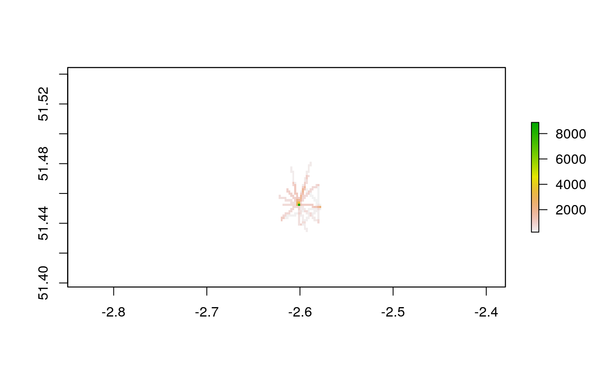

vignettes/solutions12.Rmd
solutions12.RmdThe solutions assume the following packages are attached (other packages will be attached when needed):
You must have run the following code chunks to answer the questions:
zones_attr = bristol_od %>% group_by(o) %>% summarize_if(is.numeric, sum) %>% dplyr::rename(geo_code = o) zones_joined = left_join(bristol_zones, zones_attr, by = "geo_code") zones_od = bristol_od %>% group_by(d) %>% summarize_if(is.numeric, sum) %>% dplyr::select(geo_code = d, all_dest = all) %>% inner_join(zones_joined, ., by = "geo_code") od_top5 = bristol_od %>% arrange(desc(all)) %>% top_n(5, wt = all) bristol_od$Active = (bristol_od$bicycle + bristol_od$foot) / bristol_od$all * 100 od_intra = filter(bristol_od, o == d) od_inter = filter(bristol_od, o != d) desire_lines = od2line(od_inter, zones_od) #> Creating centroids representing desire line start and end points. desire_lines$distance = as.numeric(st_length(desire_lines)) desire_carshort = dplyr::filter(desire_lines, car_driver > 300 & distance < 5000) desire_carshort$geom_car = st_geometry(route_carshort) desire_rail = top_n(desire_lines, n = 3, wt = train) desire_rail = line_via(desire_rail, bristol_stations) ways_freeway = bristol_ways %>% filter(maxspeed == "70 mph") ways_sln = SpatialLinesNetwork(ways_freeway) #> Warning in SpatialLinesNetwork.sf(ways_freeway): Graph composed of multiple #> subgraphs, consider cleaning it with sln_clean_graph(). route_cycleway = rbind(route_rail, route_carshort) route_cycleway$all = c(desire_rail$all, desire_carshort$all)
desire_lines are accounted for in the route_cycleway object?
To increase the proportion of trips that cross the proposed route, you could reduce the threshold for the number of cars in the ‘carshort’ object, e.g., by reducing the car_driver threshold to 200 as follows (code not run to avoid over-loading the OSRM demo server):
desire_carshort2 = dplyr::filter(desire_lines, car_driver > 200 & distance < 5000) route_carshort2 = line2route(desire_carshort2, route_fun = route_osrm) route_cycleway2 = rbind(route_rail, route_carshort2) route_cycleway2$all = c(desire_rail$all, desire_carshort2$all) sum(route_cycleway2$all) / sum(desire_lines$all) # around 7% d_intersect = desire_lines[route_cycleway2, , op = st_crosses] sum(d_intersect$all) / sum(desire_lines$all) # around 62%
Answers:
There are many ways to extend the analysis. Some promising lines of research could include:
Raster data analysis could help by providing useful aggregates of cycling potential (as estimated using previous methods) at a constant level of geographic resolution. The raster cells with the highest estimated potential would be prioritised.
Bonus: develop a raster layer that divides the Bristol region into 100 cells (10 by 10) and provide a metric related to transport policy, such as number of people trips that pass through each cell by walking or the average speed limit of roads, from the bristol_ways dataset (the approach taken in this Chapter).
This exercise can be tackled in many ways. The code chunk below provides an example of how rasters could focus attention on important ‘hotspots’, by calculating the cells where most people may walk (using an illustrative sample of the top 20 most walked desire lines):
bristol_raster100 = raster::raster(bristol_region, ncols = 100, nrows = 100) bristol_walking = raster::rasterize( top_n(desire_lines, n = 20, wt = foot), y = bristol_raster100, field = "foot", fun = sum ) plot(bristol_walking)
